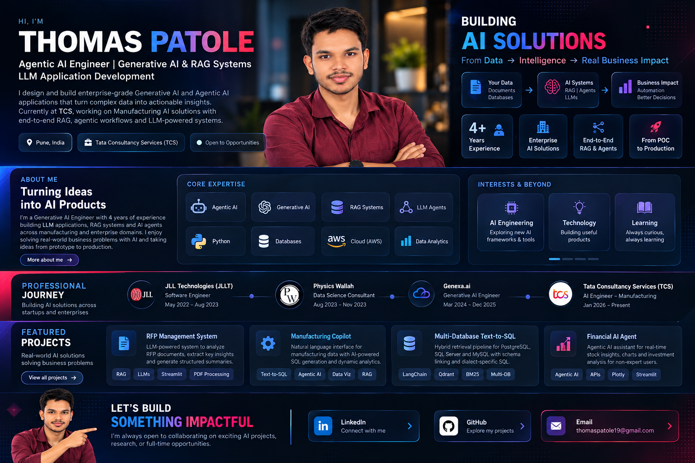

Thomas Patole
Agentic AI Engineer | Generative AI & RAG Systems | LLM Application Development
Building practical AI systems across enterprise RAG, agentic workflows, hybrid retrieval, and natural-language data access.
LinkedIn · GitHub repositories
Local preview. Keep README.md and assets/ together when publishing.